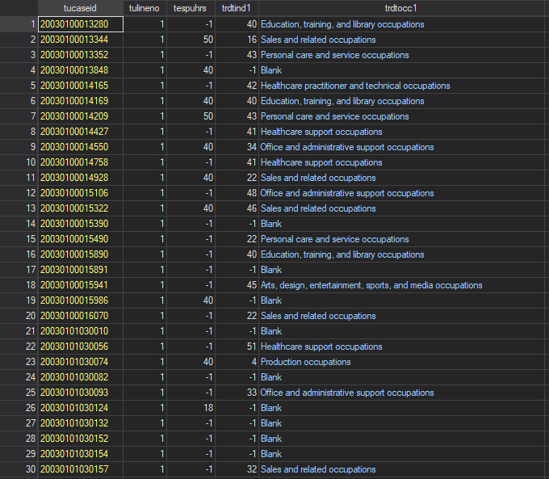
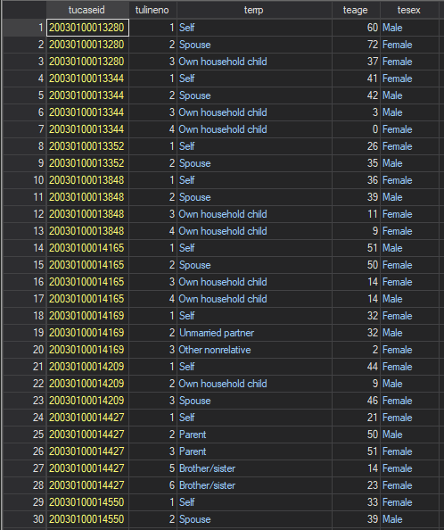
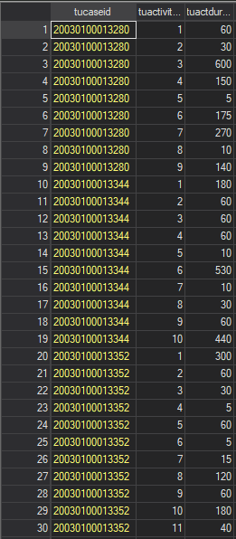
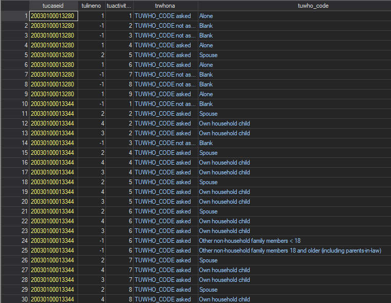
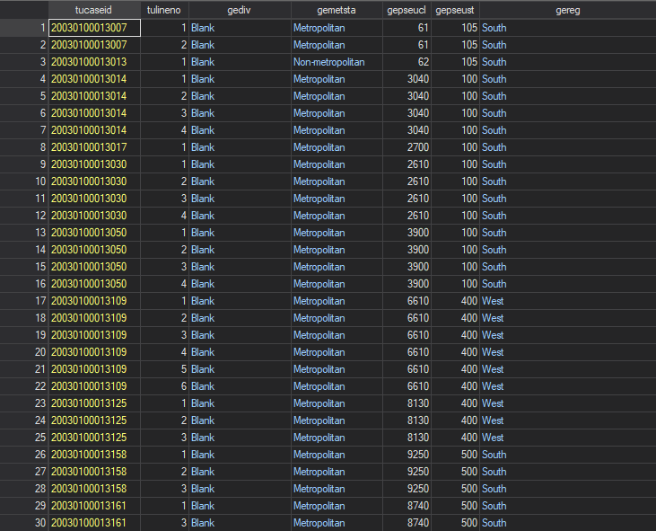

Lab 4 - Merging Datasets
Overview
This lab focuses primarily on the structure of datasets, object or unit identifiers, and merging datasets together to combine information from multiple sources. Understanding how to structure and merge data in statistics software - like Stata - can both expand your analytic capabilities through being able to combine data and help illustrate the logic and connections underpinning relational databases.
Structure
The empirical exercises in this lab use data from the 2003-2016 waves of the American Time Use Survey (ATUS). The ATUS is nationally representative and has been administered annually since 2003 by the U.S. Bureau of Labor Statistics. It is freely and publicly available at https://www.bls.gov/tus/. The ATUS collects a 24-hour retrospective time diary from one individual over age 15 per household from a subset of the Current Population Survey (CPS) sampling frame and links each diary to sociodemographic household data from the CPS. In addition, the ATUS collects a full household roster from the respondent, including the relationship of each household member to the respondent, to allow for an examination of who is with the respondent during different activities. Since the ATUS can be linked to the larger CPS, the ATUS provides a means to examine time-use patterns across a variety of population characteristics, such as the activities of the unemployed versus the employed, and those in different professions, which can provide useful information for policy-makers.
The ATUS provides multi-year files as well as single-year datasets, which can be appended to existing multi-year files as they are released. Unless interest is in a specific year, we suggest working with the multi-year file. In addition to the actual data, the BLS provides two important, clear pieces of documentation that analysts should download. First, the multi-year ATUS Coding Lexicon is a clean, searchable pdf document that articulates the ATUS activity codes central to any time-use analysis. Activity codes are 6 digits that code activities at three levels: the first two digits identify 18 unique “major categories” such as household activities and eating & drinking. The second two digits refine this a bit by decomposing major categories into subcategories; for example, household activities are broken down into subcategories such as housework, interior maintenance, food preparation, and so on. The final two digits code fairly specific activities; for example, housework is broken down into cleaning, laundry, sewing, and so on. Six-digit codes ending in 99 are a catchall n.e.c. (not elsewhere classified) category. This coding scheme provides flexibility, as researchers can use the broad “major category” two-digit codes or the specific six-digit codes, depending on the question of interest. Second, two data dictionaries thoroughly document the respondent, diary day, and household member information available in the ATUS: the interview data dictionary describes the items used in ATUS-specific surveys and the CPS data dictionary details the CPS-related variables that can be linked to ATUS respondents.
Several distinct data files comprise the ATUS. Each serves a specific purpose and is described below as it becomes necessary for our analysis. Merging these files and knowing where to look for a specific piece of information are two of the more challenging aspects for first-time ATUS users. However, with some practice and patience this becomes second nature. We outline the separate data files here as a reference:
- Respondent: Basic sociodemographic information about the diary respondent
- Roster: Sociodemographic information about other members of respondent’s household and the nonhousehold children of the respondent
- Activity: Main time-use data for the respondent’s diary day: type, start and end time, and location of each activity
- Activity Summary: Simpler version of time-use data that simply reports the total time spent by respondent in each type of activity on the diary day
- Who: Identifies who was present during each episode in the Activity File
- ATUS-CPS: CPS data on all household members
- Eldercare Roster (new in 2011): Information about people for whom the respondent provided care
- Replicate Weights: ATUS sampling weights
In this lab we use the respondent, roster, activity, who, and CPS files. The files are merged to one another using a unique case identifier tucaseid.
Data File Descriptions
We begin the lab by replicating the results in Gerhsenson and Holt (2015) using the most recent ATUS data (2003-2016). The goal here is to provide a gentle introduction to the ATUS data, each data file, and how the separate files relate to one another.
When doing individual analyses of time use, our final objective will be to get all linking data to the individual level in which tucaseid can uniquely identify observations in a one-to-one relationship for the final merge. Note that nearly all merges in Stata should be one-to-one or one-to-many merges. Many-to-many merges are generally to be avoided. Thus, you should always understand the identifier variable or combination of identifier variables that can facilitate one-to-one or one-to-many merges, both in the context of using the ATUS, but also when merging data across sources more generally.
Respondent file. The ATUS respondent file contains demographic, employment, and socioeconomic data on the ATUS respondent. The dataset also provides information about the diary day, month, and year that the respondent completed their time-use diary. The data are structured in a wide format with one line (data entry) per case and allow us to code some basic information about the respondent. The respondent file provides some topline time-use aggregations, such as total time spent providing childcare, total time spent with different types of people in a day, and other categories of commonly examined activities. The aggregated data can be useful for more general analyses or to practice working with time-use data in one self-contained dataset. The unique respondent identifier here is tucaseid and the unit of observation in the file is the individual respondent for a given household.

Note that each observation above has a unique value of tucaseid and has a household roster number (tulineno) of 1 - the value used to identify the respondent in a household. Each column thus uniquely measures variables relative to the respondent of the household and the time diary data for each case all relates to the time use of the respondent.
Roster file. The roster file contains a roster of every person living in the respondent’s household and their age, gender, and relationship to the respondent (e.g., parent, sibling, roommate, etc.). The roster file is structured in the long format containing a panel of household members for each case, where household members are uniquely identified by tulineno, which, together with the case identifier tucaseid, allows analysts to link the roster information to the who file.

Here, rather than tucaseid capturing the single survey respondent from each household, members of the same household have the same tucaseid identifier and tulineno now takes on additional values for household members besides the respondent. In relation to the respondent file, the roster file has a many-to-one structure (i.e., many observations from the same household in the roster file that links to one observation per household in the respondent file). For other files, such as the who file, the combination of tucaseid and tulineno creates a one-to-one link with the roster file.
Activity file. The activity file is the centerpiece of the ATUS and contains a rich panel of data, in long form, of every activity each case participated in over the 24-hour period of their diary day. Data are at the case-activity level and provide information on the start and end times of each activity, measures of cumulative and activity-specific time spent during the activity (in minutes), an activity category code, information on where the activity took place, and links for identifying who was present for each activity. Note that the data structured here is a panel while the information we want is at the individual person level. Converting information on the activities in which we are interested into a useable format is a nontrivial task that we will do together below.

Here, because the unit of observation is the person-activity, tucaseid again repeats for each activity the respondent reports doing on their diary day. In relation to the respondent file, the activity file has a many-to-one relationship using the linking identifier of tucaseid. In relation to the who file, the combination of tucaseid and tuactivity_n uniquely identify observations of activities to facilitate a one-to-one activity-level merge.
Who file. The who file is a panel that mirrors the structure of the activity file and provides links to the roster file. It identifies which, if any, household members were present for each activity in the activity file. This allows analysts to examine time spent in different activities with specific people within households, such as parents and their young children or time shared between teenage siblings. The who file also provides a more general code for each activity that captures both the basic relationship to the respondent of each person present and includes categories for non-household members, such as friends or coworkers, that would not be captured in the who file. The case identifier and activity number (tuactivity_n), together, allow analysts to link who was present for an activity to each activity. Importantly, some activities will have multiple people present and analysts will have to reshape parts of the data before merging the who file with the activity file.

We can see in the who file that the data is stored at the activity-person level to capture situations where multiple people are with the respondent during a given activity. Thus, tucaseid and tulineno allows analysts to link the roster file to the who file in a one-to-one relationship. For linking activities to who was present for the activity, the data would need to be cleaned a bit to allow tucaseid and tuactivity_n to uniquely identify activities and allow a one-to-one merge with the activity file.
CPS file. Finally, the CPS file contains household-level socioeconomic, education, and demographic information necessary to create control variables and identify the high school students who constitute the analytic sample of interest. Like the roster file, the CPS file is a panel dataset with a line for each member of the respondent’s household.

Respondent and Case. Throughout the lab, we use respondent to refer to the individual person sampled for the ATUS and case to refer to the linked data collected about the respondent (e.g., household members, time diaries, etc.) which often include multiple observations per respondent.
Cleaning and Merging Data
The next step is to download the raw data. The data files come in a compressed .zip file that contains a comma-separated values (CSV) file and code files for generating a Stata, SAS, or SPSS dataset from the CSV file. We use Stata. After extracting the files, open the Stata do file, copy the pathway to the folder where you have saved the CSV dataset, and run the do file to create a Stata dataset for each data file. You can find the .dta files for each file needed for the lab here. Download them and move them to your data subfolder of your class folder.
We can now create the variables we will need for our analysis from each dataset and then merge the datasets into one master dataset that we will use to construct the final analytic sample. Start with the roster and CPS files to collect some basic information about respondents’ household structures and proxies for socioeconomic status (SES). Stata has some built-in commands that will convert these variables from individual-level to case-level.
First, identify the respondent’s family size and other siblings. Since our primary interest is examining the gender gap in time spent studying, child care responsibilities that may come with the presence of young children or many siblings might influence students’ study habits differently across genders. Accordingly, we open the roster file:
cd "C:\rpad504\
use “data\rost0316.dta”Then, make sure the data is sorted properly:
sort tucaseid tulinenoFinally, to count household size, the number of children in each household, and age of the youngest child household, we use Stata’s egen command, which applies the values of these variables to the whole case rather than the household member-specific line. Consequently, the last line of code below keeps one observation per case to create a set of individual-level roster summary variables for each respondent in the sample.
egen hhsize1 = count(_n), by(tucaseid)
egen hhsize = max(hhsize1), by(tucaseid)
egen hhchild1 = count(_n) if teage <= 17, by(tucaseid)
egen hhchild = max(hhchild1), by(tucaseid)
egen ygchage = min(teage), by(tucaseid)
replace ygchage = 0 if ygchage < 0
gen yngchild = 0
replace yngchild = 1 if ygchage <= 2
drop hhsize1 hhchild1
by tucaseid: drop if _n > 1
save "data\hhvars.dta", replaceNow, we will use a combination of the roster and CPS files to identify respondents’ parents and create variables that capture parents’ educational attainment and employment status. In the U.S., educational attainment is highly correlated with other socioeconomic indicators, such as income, wealth, occupational prestige, and other important resources. Consequently, when studying education-related behaviors, parental education is a useful proxy for SES. We first merge the roster and CPS data files together:
use “data\cps0316”
sort tucaseid tulineno
save “data\cps0316”, replace
merge 1:1 tucaseid tulineno using “data\rost0316.dta”, replace
drop _merge
save “data\rostcps.dta”, replaceFocus in on the merge command above. merge is, of course, the command to tell Stata “please add columns (i.e., variables) from another dataset to the dataset I currently have open,” but to do that, Stata needs to know how the datasets relate to one another and how to identify matching rows across the datasets. Without considering rows, you can have variable values assigned to observations to which they do not actually belong (i.e., assigning the information about a household roster to the wrong respondents), corrupting both the data you are using and any analysis arising from it. After the command, 1:1 tells Stata that the rows relate in a one observation to one observation manner across both datasets. Alternatives for different data structures would be m:1 (many observations in the master file - the dataset currently open - to one observation in the using file that is being merged) or 1:m (the reverse). Finally, you add the variables that identify units of observation across both dataset. In this case, both tucaseid and tulineno are needed to identify unique observations consistently across both datasets. This is the basic process and structure of merging datasets in Stata
We then use the combined dataset to identify which line contains the respondents’ parents and use that flag to apply the parents’ information to the respondent. Again, we conclude by keeping only one observation per case.
sort tucaseid tulineno
gen dad1 = 0
replace dad1 = 1 if terrp ==24 & tesex ==1
egen dad2 = max(dad1), by(tucaseid)
gen mom1 = 0
replace mom1 = 1 if terrp ==24 & tesex ==2
egen mom2 = max(mom1), by(tucaseid)
gen deduc1 = 0
replace deduc1 = peeduca if dad1==1
gen meduc1 = 0
replace meduc1 = peeduca if mom1==1
egen deduc = max(deduc1), by(tucaseid)
egen meduc = max(meduc1), by(tucaseid)
gen employd1 =0
replace employd1 = 1 if prempnot ==1 & dad1 ==1
gen employm1 =0
replace employm1= 1 if prempnot ==1 & mom1 ==1
egen employd = max(employd1), by(tucaseid)
egen employm = max(employm1), by(tucaseid)
sort tucaseid
by tucaseid: drop if _n > 1
save “data\rostcps2.dta”, replaceFinally, we merge the household variables we created into the dataset and merge in the respondent file to create demographic, income, employment status, and diary day and month controls.
merge 1:1 tucaseid using “data\hhvars.dta”, replace
drop _merge
save “data\rostcps2.dta”, replaceYou’ll notice that after merges, Stata provides a summary of the merge - the number of observations only found in the master dataset, the number found only in the using dataset, and the number of observations successfully matched across both datasets. Being familiar with the data you are using helps set expectations for whether - and to what degree - observations should be unmatched across datasets. A variable that tracks this information is generated after a merge (_merge) and tags observations that fall into one of those three categories after the merge. When you are merging multiple datasets, you will want to either rename this variable, if it’s relevant to save for future investigations of data issues, or drop this variable to avoid an error.
We can then merge in the respondent information, now that things have been reduced to the respondent level in the roster and CPS files, and code up our respondent gender identifier.
merge 1:1 tucaseid using "data\resp0316.dta"
drop _merge
gen male = 0
replace male = 1 if tesex ==1
save "data\rostcpsresp.dta", replaceNow, we turn to the more complicated task of coding the dependent variable of interest, time spent on homework or school-related research, followed by a summary of how to code time spent on other activities. The activity file in Stata contains more than 3.5 million observations. To streamline things, we will keep only homework activities using the four-digit activity code (trtier2p):
use "data\act0316.dta"
sort tucaseid
keep if trtier2p == 0603Left with a sample of homework activities, sorted by the case identifier, we now code a variety of homework-related variables. First, we will use the activity duration provided in the ATUS and a process similar to our previous aggregation of household characteristics to summarize the total time spent on homework by each respondent.
egen hw_tots = sum(tuactdur24) if trtier2p == 0603, by(tucaseid)
egen hw_tot = max(hw_tots), by(tucaseid)
by tucaseid: gen number = (_n)
egen study_count = max(number), by(tucaseid)This process can be used to code the total time spent in a day on any activity of interest to the analyst. Once again, we merge the homework time data into our analytic sample.
bys tucaseid: drop if _n > 1
merge 1:1 tucaseid using "data\rostcpsresp.dta"
drop _merge
keep if hs_enroll == 1 & teage <= 19
save “data\analyticsample.dta”, replaceFinally, we limit the sample to only respondents enrolled in high school (hs_enroll == 1) and aged 15 to 19 (teage <= 19), which is the age range of a typical high school student in the United States.
Alright, we are almost ready to replicate the descriptive analysis from Gershenson and Holt (2015). Let’s first label our variables and create the last few variables we need regarding study time (i.e., studying at all and length of study spells if any time is spent studying).
label var male "Male"
gen hw_tot2 = hw_tot if hw_tot > 0
gen zero_study = 0
replace zero_study = 1 if hw_tot == 0
label var hw_tot2 "Daily T|T > 0"
label var hw_tot "Daily homework time (T; in minutes)"
label var zero_study "Zero homework time (T=0)"
gen weekly_hw = ((hw_tot*7)/60)
label var weekly_hw "Weekly homework time (in hours)"
save “data\analyticsample.dta”, replaceNow, we have the ingredients we need to look at average study time overall and separately by student gender.
estpost tabstat male hw_tot zero_study hw_tot2 weekly_hw, statistics(mean sd count) columns(statistics)
est sto all
estpost tabstat male hw_tot zero_study hw_tot2 weekly_hw if male == 1, statistics(mean sd count) columns(statistics)
est sto male
estpost tabstat male hw_tot zero_study hw_tot2 weekly_hw if male == 0, statistics(mean sd count) columns(statistics)
est sto female
esttab all male female using "output\table1.rtf", cell(mean(fmt(2)) sd(par)) label unstack compress obslast rtf mtitles("All" "Males" "Females") addnotes("Standard deviations in parentheses")And that’s it for lab 4! We should now have a sense for how linking variables can identify cases with different units of observation in different datasets, how to clean data for merging datasets that begin with different units of observation, and how to use that data for a short descriptive analysis after merging the data. The most common version of this is using geographic identifiers (state fips or county fips) to aggregate individual data and combine it with higher-level community data or vice versa. In such cases, you will simply need the state identifier or county identifier to be collected in both datasets and, with careful attention to the unit of observation in the two datasets you are merging, you can prepare them accordingly.